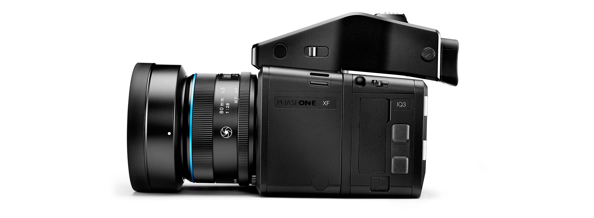
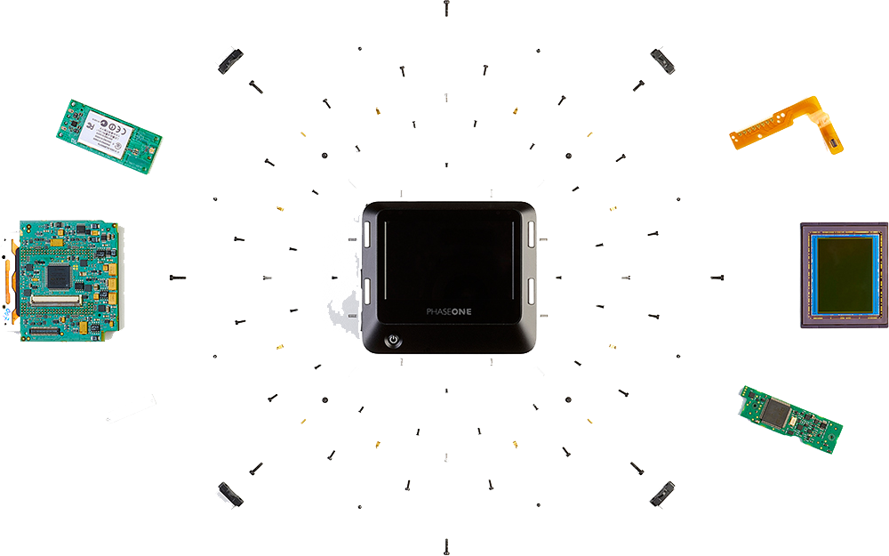
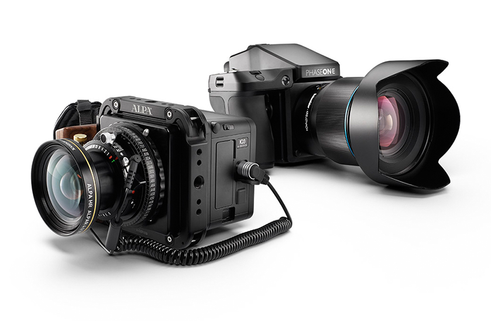
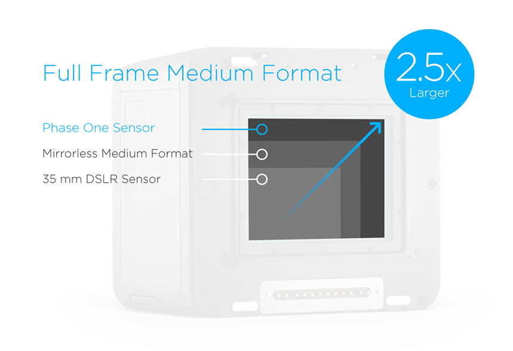

IQ3 数码后背
专业摄影师必不可少的工具
IQ3数码后背在高要求的专业级应用中有着令人难以置信的全面功能。
IQ3是一款专业摄影师全方位适用的数码后背，与XF相机系统协
同工作时，可凭借闪光处理、电源管理、快速打样、创新快门技术
和防抖工具提供先进解决方案。Phase One的开放式平台理念意味
着IQ3可在包括Cambo、ALPA和Arca在内的一系列技术相机上
互换使用，实现卓越的图像质量、灵活性和艺术自由度。IQ3有两个
100MP CMOS传感器版本可选，是专业摄影师必不可少的工具，
自2015年以来一直处于数字中画幅摄影创新前沿。

主要特征
开放式平台
IQ3的解决方案具有模块性和前瞻性。作为XF相机系统的一部分使用时，IQ3在功能和工作流程上有着巨大的优势，还可搭配其它多种相机使用，实现富有创造性的灵活度，满足项目的特定需求。
自2015年以来，IQ3会定期发布改善专业工作流程的创新性功能改进升级 (适用于所有系统)。通过聆听摄影师需求，我们创造了持续提供最高专业标准的工作流程创新。
XF集成
XF相机系统灵活的模块和无缝、功能丰富、可定制的工作流程，可帮助专业人士实现最高要求的创意视觉。XF相机系统带来了广泛的高分辨率Schneider Kreuznach镜头选择，可与专用IQ数码后背相结合并可自定义拍摄设置，因而可实现高效、高质量的RAW输出。


全帧中画幅传感器
XF IQ3 100MP相机系统中的全帧中画幅传感器具有也相当于裁切传感器无反光中画幅1.5倍的尺寸，能让您采集到更多数据、获取更多细节、得到更出色成果，通过相机直接实现您的视觉创意。高分辨率提供的更大输出灵活性及最多15档的动态范围，使您的工作流程选项成倍增长。
电子快门 (ES)
电子快门 (ES) 使得在没有任何运动组件的情况下也能拍摄图像。随着第3次功能更新的引入，滚动快门技术首次引入中画幅摄影中，从而可通过数码后背进行了全方位拍摄控制，扩展了控制及应用。
申请演示
我同意，根据Phase One隐私政策(Phase One Privacy Policy)，使用我在此表单中提供的信息。